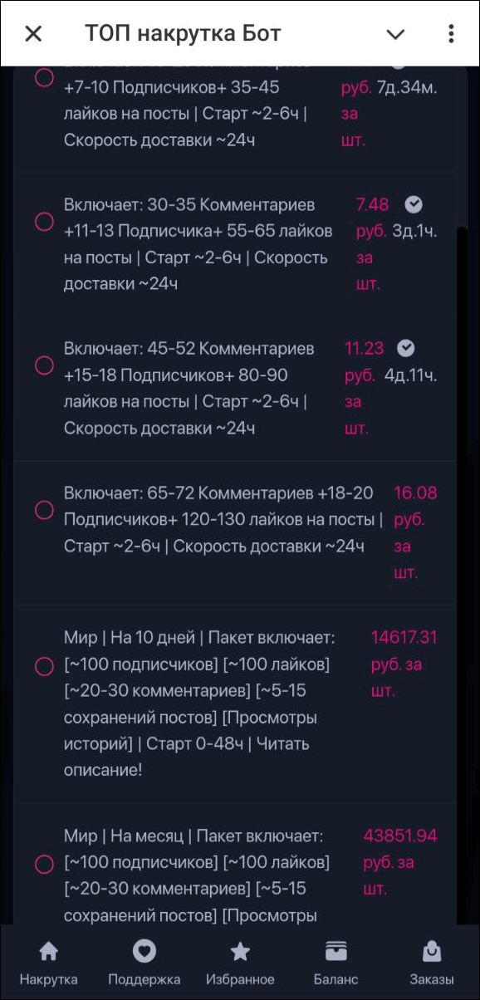

5 ботов для накрутки подписчиков в Инстаграм

Фанаты – ценный показатель в социальных сетях, отображающий заинтересованность аудитории в контенте. Бот для накрутки подписчиков в Инстаграм* поможет собрать первую тысячу поклонников всего за пару часов.
Как получить первых 1000 подписчиков
Блогом можно считать открытую страницу, с определенной тематикой и хотя бы первой 1000 подписчиков. Это то количество, которое показывает интерес потенциальной аудитории и будет рекомендовано с «Интересных публикациях». Есть несколько способов, как привлечь аудиторию:
- участвовать и создавать тренды. Новые звуки, общественно важные темы;
- искать новый контент и повышать качество;
- сотрудничать с другими блогерами;
- отвечать на комментарии, формировать доверительные отношения с подписчиками;
- рекламировать свою страницу в других социальных сетях.
Всё это поможет собрать первую 1000 подписчиков, которые будут активны в профиле и готовы делиться информацией о блоге ср своими друзьями. Кроме этого есть платные способы, как заслужить аудиторию: накрутка, оплата рекламы у крупных блогеров, привлечение специалистов по продвижению.
Используем Телеграм ботов в накрутки подписчиков в Инстаграм*
Увеличение подписчиков в Инстаграме* за счет накрутки – простой способ, получить как активных фанатов, так и просто увеличить количество подписчиков. Сервис накрутки предлагают разные услуги для повышения активности, вывода записей в ТОП. Предположим, что вам нужно развить небольшой магазин и на старте в подписчиках только друзья и знакомые. Они, конечно, могут поделиться вашей страницей и рассказать о ней своим товарищам, но обычно это привлечет менее 30 человек.
 В этой ситуации поможет накрутка по параметрам. Обычно сервисы предлагают ботов и реальных пользователей для выполнения различных задач. Также, есть разные опции по продвижению страниц: комплексные (лайки + комментарии + подписчики), на отдельные действия и на запланированные. Вы можете оформить подписку на лайки для будущих публикаций и в день, когда запись будет добавлена в ленту – сразу же добавятся отметки «Мне нравится».https://t.me/V_TOP_soc_bot
С помощью этого бота можно запустить накрутку в Инстаграме* на 1000 подписчиков, используя услугу «Комплексное продвижение». Она предполагает добавление всех видов активности, включая лайки, комментарии и подписчиков. Качество и скорость зависит от выбранного пакета: если владелец страницы выбрал ботов, то есть вероятность отписки по истечению гарантии.
@otec_smm_bot.
Бот в Телеграме позволит быстро оформить услуги продвижения, которые включают накрутку подписчиков. Доступен выбор по геолокации: фанаты только из России и стран СНГ, Франция, Германия, США и другие. Также можно указать половую принадлежность, что удобно при накрутке ботов в блоги с сугубо женской или мужской направленностью.
В этой ситуации поможет накрутка по параметрам. Обычно сервисы предлагают ботов и реальных пользователей для выполнения различных задач. Также, есть разные опции по продвижению страниц: комплексные (лайки + комментарии + подписчики), на отдельные действия и на запланированные. Вы можете оформить подписку на лайки для будущих публикаций и в день, когда запись будет добавлена в ленту – сразу же добавятся отметки «Мне нравится».https://t.me/V_TOP_soc_bot
С помощью этого бота можно запустить накрутку в Инстаграме* на 1000 подписчиков, используя услугу «Комплексное продвижение». Она предполагает добавление всех видов активности, включая лайки, комментарии и подписчиков. Качество и скорость зависит от выбранного пакета: если владелец страницы выбрал ботов, то есть вероятность отписки по истечению гарантии.
@otec_smm_bot.
Бот в Телеграме позволит быстро оформить услуги продвижения, которые включают накрутку подписчиков. Доступен выбор по геолокации: фанаты только из России и стран СНГ, Франция, Германия, США и другие. Также можно указать половую принадлежность, что удобно при накрутке ботов в блоги с сугубо женской или мужской направленностью.

@nakrutimsmm_bot. В боте предусмотрена накрутка в Инстаграм* не только для открытых, но и закрытых блогов. Это интересный формат по той причине, что такая подписка предполагает ответа от владельца аккаунта. Доступен выбор качества исполнителей: фанаты с аватарками и личными публикациями, только боты. Цена за реальных пользователей – 0,75 копеек за штуку. Проверенная накрутка подписчиков в Инстаграм* предполагает быстрый старт – всего за 30 минут вы сможете получить первых фанатов. Бот гарантирует минимальный процент списаний – до 30%. Чтобы проверить качество и скорость накрутки, нужно перейти в раздел «Заказы». Даже через чат в Телеграме можно управлять услугами и проверять текущий баланс. В этом боте видно, какие заказы были оформлены, а для проверки можно перейти на официальный сайт. Для оформления заказов не нужна регистрация или дополнительные данные, как адрес электронной почты или пароль. Вы создаете заявку в Телеграме, которая будет передана на главный сайт и оттуда придет уведомление о начале выполнения задания. Накручивать аудиторию можно и с помощью сервисов, вот ТОП 2 лучших:Почему ТГ боты сейчас самый эффективный, безопасный и дешевый способ
Безопасная накрутка подписчиков в Инстаграме* - серьезное преимущество для любого сервиса, предлагающего подобные услуги. Поэтому защита данных пользователей параметр, на который стоит обращать внимание:
- учитываются ли лимиты социальной сети;
- нужно ли вводить персональные данные от Инстаграма*;
- гарантия отсутствия отписок. Без этого никак, но каждый сервис/бот способен мотивировать исполнителей на долговременную подписку при выполнении заданий.
У Телеграм-ботов есть преимущества в накрутке:
- не нужно регистрировать дополнительный аккаунт на каком-нибудь сайте;
- уведомления приходят в мессенджер;
- данные защищены, потому что для получения лайков, комментариев и подписчиков нужна всего лишь ссылка;
- старт задания за 30 минут.
Все это делает Телеграм-боты наиболее удобным вариантом, если вы не хотите тратиться на привлечение СММ-специалиста или нужно развить страницу з а минимальный срок.